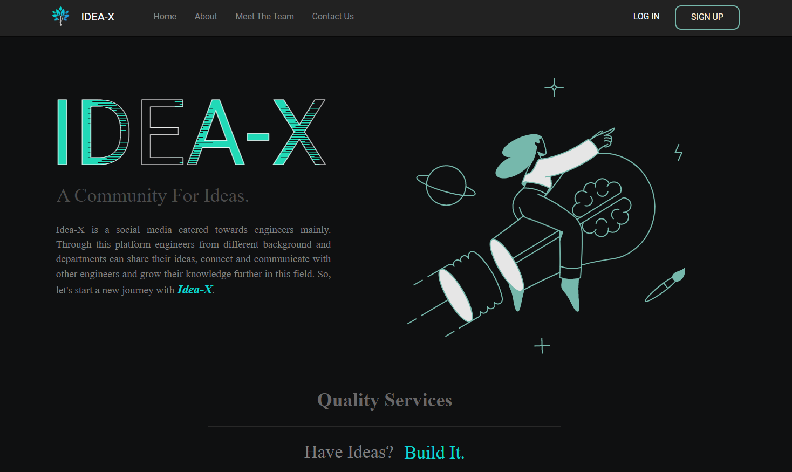

RELATED PROJECTS
EXPLORE MORE



Social media platform designed for engineers to share and explore innovative ideas. Features admin and User Access Controller roles, post management, and collaborative tools for engineering innovation.
IDEA-X is a specialized social media platform created exclusively for engineers to share, discuss, and collaborate on innovative ideas and projects. The platform addresses the unique need for engineers to have a dedicated space to showcase their technical innovations and seek feedback from peers.
Built with the engineering community in mind, IDEA-X provides features tailored to technical discussions, code sharing, and project collaboration. The platform serves as a catalyst for innovation, connecting engineers with similar interests and fostering a community of creative problem-solvers.
Rich media posts supporting detailed project descriptions, code snippets, diagrams, and technical specifications for comprehensive idea presentation.
Threaded comment system with code highlighting, mathematical notation support, and technical vocabulary for in-depth engineering discussions.
Three-tier system with Admin, User Access Controllers, and regular users, each with specific permissions and capabilities for platform governance.
Built-in project collaboration features including version control integration, team formation, and collaborative documentation tools.
IDEA-X is developed using C# with the ASP.NET framework, providing a robust and scalable foundation for the social media platform. The architecture follows the Model-View-Controller (MVC) pattern, ensuring clean separation of concerns and maintainability.
The backend utilizes SQL Server for efficient data management with optimized queries for handling social media data structures. The frontend implements responsive web design using ASP.NET Web Forms with custom controls for enhanced user experience. Security measures include data validation, authentication, and protection against common web vulnerabilities.
IDEA-X implements a sophisticated three-tier user role system to ensure proper platform governance. Administrators have complete control over platform settings, user management, content moderation, and system analytics.
User Access Controllers (UACs) serve as moderators with enhanced permissions to manage content, resolve disputes, and enforce community guidelines. Regular users can create posts, comment, collaborate on projects, and participate in the engineering community with appropriate access controls.
IDEA-X creates a valuable ecosystem for engineers to showcase their innovations, receive constructive feedback, and find collaboration opportunities. The platform bridges the gap between academic research and practical implementation, helping engineers transform ideas into real-world solutions.
By providing a dedicated space for technical discussions and idea sharing, IDEA-X contributes to the advancement of engineering knowledge and fosters a culture of innovation and continuous learning within the engineering community.